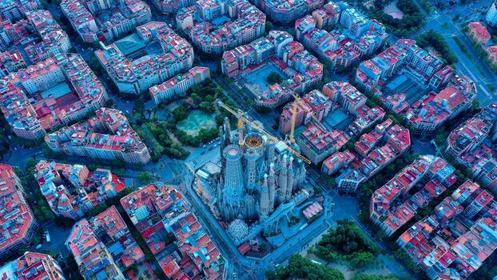

Barcelona: una ciudad entre el mar y la arquitectura.
Barcelona es una ciudad ubicada en la costa mediterránea y es la capital de Cataluña, España. Se caracteriza por combinar historia, arquitectura, arte, gastronomía y vida urbana. Es especialmente conocida por el modernismo catalán y por las obras de Antoni Gaudí, que forman parte de la identidad visual de la ciudad.

Características principales:
- Ubicación junto al mar Mediterráneo.
- Arquitectura modernista y gótica.
- Gran variedad de museos y espacios culturales.
- Gastronomía catalana y mediterránea.
- Playas y espacios al aire libre.
- Festivales, conciertos y eventos durante todo el año.